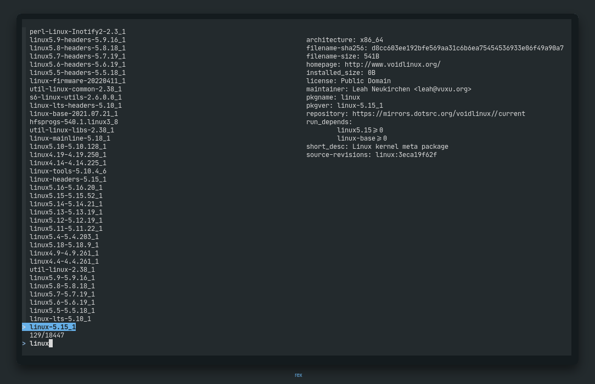

why do I use void linux
not much of a theoretical answer
so, most of my frens must be knowing that I am a guy who was a
archlinux lover in my beginner days. I was totally a “Btw i use arch”
guy. and now I am a peaceful void linux user. the reason behind me using
void linux from almost a year is the logo its minimal. It
fulfills all of my needs. I like being minimal in hand with
productivity.
Theoretical Answers
UPDATES.
Void linux and Arch Linux both of them are rolling release distros, both of them always have a hell lotta updates everytime. But void provides me the freedom to partially update my system according to my needs. I dont update for months, whenever I am having any dependency issue or some of my important package releases a update which is important for me, I update that particular package.
But incase of arch If I do not update it for only for some 1-2 month’s it’ll start acting hella weird.
Package Manager
pacman -Syu && xbps-install -u
most of the people think that xbps-install is just too big to write. I totally agree upon that but its not a reason to shift. I’ve set alias for all of them include xbps-updates, xbps-install, xbps-remove, xbps-reconfigure, xbps-fetch, xbps-query. Xbps is faster than pacman as i’ve experienced.
Older Kernel Versions.

as you can see in the screenshot above, you’ll find older linux kernel packages too. Void repo doesnt remove the older versions of linux kernel, so if a user feelsv that he is not able to be stable at the current version he can shift to older kernel too.
less packages
but they are enough for a man of culture.
ill always keep adding my thoughts along with time.